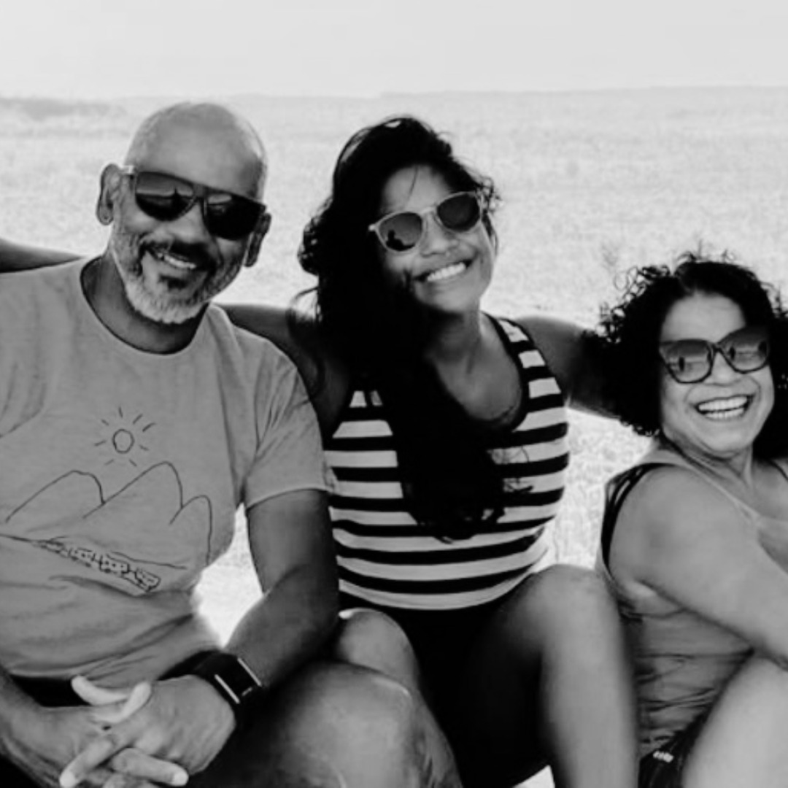

üåç Era para ser um sonho... Virou um pesadeloüíî
 ✅ História Verificada
✅ História Verificada
Juliana Marins era aquele tipo de pessoa que iluminava qualquer ambiente só com o sorriso.( TEMOS POUCAS HORAS) Publicitária carioca de 26 anos, ela tinha no coração o amor pelas viagens, pela descoberta e pelo mundo. E foi exatamente isso que ela decidiu viver: um mochilão pela Ásia — um sonho há muito planejado, mas que terminou de forma trágica. Ela chegou ao Monte Rinjani, na Indonésia — um vulcão majestoso de 3.726 metros de altura. Uma aventura desafiadora, mas possível para quem estava disposta a tudo.
Mas algo saiu terrivelmente errado.
E foi ali, sozinha, que ela caiu cerca de 300 metros por um terreno escarpado . ⏳ Ela ainda estava viva... mas não resistiu.
Naquele sábado, cerca de três horas após o acidente, drones localizaram Juliana viva, sentada em uma rocha, sinalizando por socorro..
Ela ainda respirava. Ainda esperava por ajuda. Mas as equipes de resgate enfrentavam neblina, clima extremo e terreno instável. A operação não foi concluída a tempo.
Quatro dias depois, seu corpo foi encontrado em condições precárias. A autópsia confirmou: fraturas graves, hemorragia interna. Sua vida se apagou cerca de 20 minutos após a queda ..
"A família denuncia grande negligência no processo de resgate. E exige justiça."
üíî Um adeus adiado.
O luto da família Marins é pesado demais. Além da dor imensa da perda, eles têm que lidar com outra crueldade: Juliana ainda não está em casa. O Itamaraty informou que, segundo a legislação atual, não arcaria com os custos do translado internacional .
A Prefeitura de Niterói se manifestou solidária, mas ainda faltam recursos para efetivar o resgate. Um novo decreto federal foi editado… mas nada garante que ele seja aplicado a tempo .
Enquanto isso, a mãe, o pai e os amigos choram, indignados, vendo o corpo da filha, irmã e amiga ainda distante de sua terra natal.
❤️ Como você pode ajudar
enterrar Juliana no Brasil, perto de quem a amava.
Sua doação será utilizada diretamente para:
Taxas de translado internacional (documentação, caixão adequado e seguro);
Logística completa (voo, transporte terrestre, alfândega e apoio funerário);
Apoio jurídico para garantir que promessas virarem ações.
üí∞ Cada real faz diferen√ßa
Você sabia que:
● R$ 100 já reduzem o atraso nos trâmites burocráticos;
● R$ 500 podem cobrir todo o transporte até o Brasil;
● R$ 2.000 dão dignidade ao último adeus.
Empressario estão nessa causa tambem e DOBRARAM cada doação que for feita ao Juliana Marins, isso vai ajudar DEMAIS e agora mais do que nunca precisaremos da sua ajuda!!! Se você está lendo isso agora, eu te peço com o coração aberto: nos ajude. Assista nossos vídeos. Veja com seus próprios olhos quem é a Juliana Marins, quem somos nós. E se puder doar qualquer valor, saiba que estará ajudando dois irmãos a continuar lutando juntos — com dignidade, com carinho, com esperança. Você pode ser a diferença entre a dor e o alívio. Entre o desespero e a esperança.
Você receberá:
● Atualizações da nossa jornada
● Vídeo Exclusivos do Translado
● Seu nome na nossa lista de anjos (se desejar)
Compartilhe nossa história. Cada compartilhamento é uma nova chance de devolver a Filha amada á familia.
Que Deus abençoe você e a sua família.
Att: Pai e Mãe da Juliana Marins.